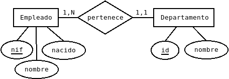

-
Instalación
Instalamos Symfony
wget https://get.symfony.com/cli/installer -O - | bash. -
Crear aplicación
Creamos una nueva aplicación Symfony
symfony new --version=lts --full --no-git -
Configuar base de datos
Configuramos la conexión de la base de datos
.envSiendo nuestro modelo de datos
 -
Crear entidades
php bin/console make:entity
-
Crear CRUD
php bin/console make:crud
-
Generar base de datos
php bin/console doctrine:database:create
php bin/console doctrine:schema:create -
Arrancar el servidor
symfony serve
-
Modificar el esquema de la base de datos
php bin/console doctrine:schema:update
-
Mejorar el aspecto de la aplicación
A partir de ahora, ¡¡¡ pongan su sonido alto !!!
La aplicación funciona bien pero vamos a mejorar la imagen del resultado obtenido.
-
Añadir menú
Ahora vamos a incluir un menú y una ruta inicial a la aplicación
-
Establecer sesión de usuario
Vamos a incluir una sesión identificada
Con esto podríamos decir que la aplicación está finalizada aunque seguro que incluiremos posteriormente algún extra.
Algunas cuestiones que hemos resuelto de forma manual, como el css, si leemos información de Symfony veremos que se puede realizar de otros modos más profesionales y flexibles.
Ahora ¡es tu turno!